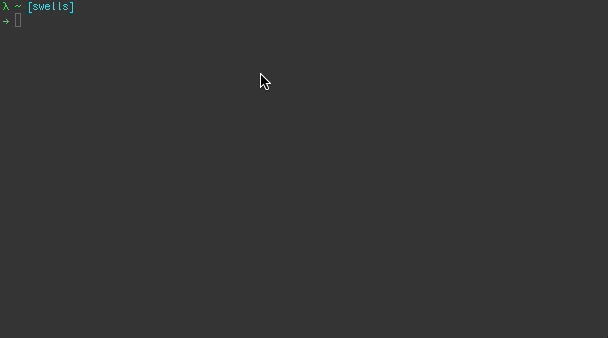

♥ The DeployR Team @ github
https://github.com/deployr/deployr-cli
CLI == command line interface
Designed to be a tool for running useful DeployR utilities
# Authenticate with DeployR
$ di login
100% JavaScript
... and Node.js
Built on Google Chrome's V8 JavaScript runtime
JavaScript EVERYWHERE not just the browser
$ echo 'foo' | yourscript
$ ps aux | grep yourscript
We used DeployR APIS to build the DeployR CLI
One-line install using npm (Node Package Manager)
$ npm install -g deployr-cli
This will put the di command in your system path
$ di <resource> <action> <param1> <param2> ...
$ di login
$ di whoami
$ di help
$ di install example
find us on Github
https://github.com/deployr